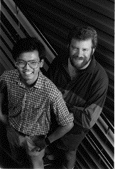

In Developer Technical Support, we're asked from time to time how to make a GWorld
so that its pixel image uses memory on a NuBusTM card rather than memory in the
application's heap. The idea is to create a GWorld, put the address of the card into the
GWorld, use QuickDraw to draw into the GWorld, which effectively draws into the
NuBus card's memory, and display the resulting image on the screen. Doing this in a
way that works well with the 8*24 GC version of QuickDraw and with whatever
QuickDraw brews up in the future isn't possible without breaking a few guidelines.
We'll talk about the reasons for this and what you can do instead. For the more cavalier
among you, we'll also talk about the least offensive method of coercing a GWorld so that
it uses memory on your NuBus card.
NewGWorld allocates off-screen buffers simply by using the same Memory Manager
calls that you can make. To allocate the memory, NewGWorld simply calls NewHandle
to allocate the buffer in your application's heap unless you have the useTempMem bit
set, in which case it allocates the buffer in temporary memory. It then tries to move
the buffer as high in your heap as possible by calling MoveHHi. That's really all there
is to it. The GWorld's pixMap, GDevice, and CGrafPort are allocated similarly--
they're all allocated in your heap using regular Memory Manager calls with no special
options, patches, or other nefarious tricks.
None of this changes when you have the 8*24 GC software active--all memory is still
allocated out of your application's heap. Once you start drawing into the GWorld,
though, the GC software can copy the parts of the GWorld to the 8*24 GC memory. The
GWorld and its parts still occupy your heap's memory though, regardless of whether
it's cached on the 8*24 GC card.
If you have a NuBus card with gobs of memory, NewGWorld can't take advantage of it
because the Memory Manager calls that it uses can't allocate memory on NuBus
memory cards. There are no options to NewGWorld or any other GWorld calls that let
you say, "There's lots of memory over on this NuBus card, all for you." While GWorlds
are absolutely fantastic for creating off-screen drawing environments for most of the
usual kinds of situations, they're just not appropriate if you want complete control
over where or how the parts of a GWorld are allocated.
QuickDraw is the only thing that's supposed to know how GWorlds are constructed. We
know that they're CGrafPorts and we can get their pixMap, GDevice, and off-screen
buffer, but we shouldn't make any assumptions about how they were allocated and
where they are. For example, we know that the off-screen buffer is allocated as a
handle now, but that won't necessarily be the case in the future. There's no
guaranteed way to tell which way it was allocated, or even if NewGWorld uses the
Memory Manager to allocate it at all (which it always does currently, of course). Even
the GWorld's CGrafPort is allocated as a handle that just happens to be always locked. If
you try to dispose of a GWorld in which you've modified the baseAddr, you'll need
DisposeGWorld to make sure everything is deallocated properly, but its behavior is
undefined when it tries to deallocate the off- screen buffer. So if you want to use the
memory on your NuBus memory card and feel comfortable that you're not relying on
something that could change, you're going to have to create your own off-screen
drawing environment by creating an off-screen pixMap, a color table if your
off-screen drawing environment uses indexed colors, a GDevice, and a CGrafPort. The
April 1989 edition of Macintosh Technical Note #120, "Drawing Into an Off-Screen
Pixel Map," covers creating your own off-screen pixMap, CGrafPort, and color table,
but it requires you to have the same depth and the equivalent color table that the
screen has, so it just steals a screen's GDevice. We think it's always a good idea to
create your own GDevice when you draw off screen. If you use a screen's GDevice for
drawing off screen, you have to depend on that GDevice's depth and color table. By
creating your own GDevice, your off-screen drawing environment can use any depth
and color table you want at any time and still be insulated from whatever changes the
user makes with the Monitors control panel.
To create your own GDevice, it's better not to use NewGDevice because it always
creates the GDevice in the system heap; it's better to keep your data structures in your
own heap so that they don't get orphaned if your application quits unexpectedly and that
precious system heap space is preserved. Here's what you should set each of your
GDevice's fields to be:
| gdRefNum | Your GDevice has no driver, so just set this to 0. |
| gdID | It doesn't matter what you set this to; you might as well set it |
| to 0. | |
| gdType | Set to 2 if your off-screen pixMap uses direct colors (16 or |
| 32 bits per pixel) or 0 if it uses a color table (1 through 8 | |
| bits per pixel). | |
| gdITable | Allocate a small (maybe just 2-byte) handle for this field. |
| After you're done setting up this GDevice and your off-screen | |
| pixMap, color table (if any), and CGrafPort, set this GDevice | |
| as the current GDevice by calling SetGDevice, and then call | |
| MakeITable, passing it nil for both the color table and inverse | |
| table parameters, and 0 for the preferred inverse table | |
| resolution. | |
| gdResPref | We reckon that more than 99.9% of all inverse tables out |
| there have a resolution of 4. Unless you have some reason not | |
| to, we'd recommend the same here. | |
| gdSearchProc | Set to nil. Use AddSearch if you want to use a SearchProc. |
| gdCompProc | Set to nil. Use AddComp if you want to use a CompProc. |
| gdFlags | Set to 0 initially, and then use SetDeviceAttribute after |
| you've set up the rest of this GDevice. | |
| gdPMap | Set to be a handle to your off-screen pixMap. |
| gdRefCon | Set to whatever you want. |
| gdNextGD | Set to nil. |
| gdRect | Set to be equal to your off-screen pixMap's bounds. |
| gdMode | Set to -1. Why? We're not sure. This is intended for GDevices |
| with drivers anyway. | |
| gdCCBytes | Set to 0. |
| gdCCDepth | Set to 0. |
| gdCCXData | Set to 0. |
| gdCCXMask | Set to 0. |
| gdReserved | Set to 0. |
For gdFlags, you should use SetDeviceAttribute to set the noDriver bit. You should also
set the gDevType bit to 1 if you're using two bits per pixel or more, but it can be left
at 0 if you're using only one bit per pixel.
The other big difference from the technique shown in Technical Note #120 is that the
off-screen pixel image shouldn't be allocated. Instead, just point the baseAddr field of
your off-screen pixMap at your NuBus card's memory. You should also set the
pmVersion field of your off-screen pixMap to be the constant baseAddr32 (equal to 4).
That tells Color QuickDraw to use 32-bit addressing mode to access your off-screen
buffer, and that's a requirement if your off-screen pixel image is located on a NuBus
card.
When you want to draw into your off-screen pixMap, save the current port with a call
to GetPort and the current GDevice with a call to GetGDevice. Then set the current port
to the off-screen CGrafPort with a call to SetPort, and set the current GDevice to the
off-screen GDevice with a call to SetGDevice. Now all QuickDraw commands are drawn
off screen and the resulting images are in your NuBus card's memory. To switch back
to drawing on screen, set the current port and GDevice back to the port and GDevice
that you saved earlier. Easy!
Even with all this, there might still be a reason to use GWorlds to draw into a NuBus
memory card. You might just want some quick and dirty way to get an off-screen
drawing environment that uses your NuBus memory card and don't care whether it
works with future system software releases or not. We'll talk about that next and also
discuss the issues that you have to be careful about when you do this.
First, create a GWorld using NewGWorld as usual. If you want to, pass it a color table,
or you can just pass it nil if you want it to make the default color table. For the GWorld
flags, make sure you pass only the keepLocal flag. This makes sure that all the pieces
of the GWorld are kept in your own heap rather than being cached into the 8*24 GC
card, even when you draw into it. That way, you avoid running into any conceivable
conflicts with GC QuickDraw over where the GWorld really is. There's no way to tell
NewGWorld not to allocate the pixel image, so you might want to make the bounds
rectangle small and then make it bigger later so that your heap isn't hit up for a lot of
memory that you don't even want. Don't pass it an empty rectangle because NewGWorld
just gives you a paramErr in that case. Call GetGWorldDevice to get a handle to your
GWorld's GDevice and save it for later.
Now it's time to have the new GWorld use your NuBus card's memory. The baseAddr of
your GWorld's pixMap is allocated as a handle, and it has to be thrown out. Call
GetPixBaseAddr with a handle to your GWorld's pixMap to get a pointer to the pixel
image that NewGWorld allocated for you. Call RecoverHandle with that pointer to get a
handle to the pixel image, and then call DisposHandle to get rid of it. Now put the
address of your NuBus board into the baseAddr of your GWorld's pixMap. Then set the
pmVersion field of your GWorld's pixMap to the constant baseAddr32. That tells Color
QuickDraw that the baseAddr of the pixMap is a 32-bit address and so it should switch
to 32-bit addressing mode whenever it draws into your GWorld.
If you passed NewGWorld a rectangle that's smaller than you actually want, you can
now set it to the real size. Set the bounds rectangle of your GWorld's pixMap and the
portRect rectangle of your GWorld's CGrafPort to the rectangle that you really wanted.
Also, set the visRgn of the CGrafPort and the gdRect field of your GWorld's GDevice to
that same rectangle. Your GWorld is ready for use!
Now the bad news. Many of the GWorld routines assume that the baseAddr field is
either a real handle or a copy of the handle's master pointer. Because the pointer in the
baseAddr field isn't a master pointer, those routines can crash when they expect one.
Setting the pmVersion field doesn't help in most cases; these routines just assume that
the GWorld's pixel image was allocated by NewGWorld, which is a reasonable
assumption. What this implies is that you can no longer call many of the GWorld
routines to maintain your GWorld without a risk of crashing. When you call SetGWorld
for your GWorld, you should pass it the GWorld's GDevice instead of nil (that's why we
recommended that you save the GWorld's GDevice after calling NewGWorld). For
safety's sake, don't call any of the following:
LockPixels
UnlockPixels
AllowPurgePixels
NoPurgePixels
GetPixelsState
SetPixelsState
UpdateGWorld
GetGWorldDevice
You can call DisposeGWorld because it won't get hung up trying to deallocate the pixel
image on your NuBus card; setting your pmVersion to baseAddr32 makes this possible.
Of course, since all these GWorld routines are off limits, almost all the benefits of
having a GWorld at all are gone as well.
Another piece of bad news is that this doesn't take advantage of the speed benefits of
using GWorlds with an 8*24 GC card. Most of the speed benefit of using GWorlds with
GC QuickDraw is that the GWorld's pixel image is allocated on the 8*24 GC card itself,
and so the image data doesn't have to take the time to move across NuBus. If your
GWorld draws into a NuBus memory card, the image data has to be moved across
NuBus, and so that speed benefit is gone.
The last bit of bad news is that even if you follow all of this, you're still not guaranteed
that it will still work in future system software or future video card releases. As we
said earlier, this should only be done if you don't care whether it works on future
system software releases or not. The description above breaks a lot of rules: don't
assume that the pixel image is allocated as a handle; don't set the baseAddr of a GWorld;
don't change the dimensions of a GWorld without UpdateGWorld; and don't set the
pmVersion field of a GWorld.
You have your choices when you want to use QuickDraw to draw off screen into the
memory of a NuBus video card. You can be safe for future compatibility by creating
your own off-screen drawing environment from scratch, or you can modify a GWorld
so that it uses your NuBus card's memory at the risk of breaking on future systems
and at the cost of losing most of the benefits of GWorlds. If you choose the first method
and you have no existing routines to create off-screen drawing environments, it's
worth it to take a look at Skippy White's Famous High-Level Off-Screen Map Routines
in DTS Sample Code #15 on theDeveloper CD Series disc. You can see these routines in
action in DTS Sample Code #16. These routines are GWorld-like to some extent,
except this time you have the great benefit of source code!
REFERENCES
FORREST TANAKA has been in Developer Technical Support just shy of two years
after a stint with unemployment and trying to get a job at Apple. Before that, he got a
BSCS while writing Macintosh device drivers for scanners and writing utility
software for a PBX. Now he's working with anything that makes images appear on the
Macintosh's screen while avoiding anything that makes images appear on paper.
Whenever he's not working, eating, sleeping, watching TV, reading, or watching a
movie, he's out riding his bike and wondering whether he should shave his legs. *
PAUL SNIVELY, formerly of Apple's DTS group, came to Apple from ICOM
Simulations, Inc., the land of the TMON debugger. He wrote the TMON 2.8 User's Guide
and has written for MacTutor magazine. His interests include natural- language
processing, knowledge representation, adventure-game programming, horror and
suspense, hiking, camping, spelunking, and other things better left unsaid.*
For information about inverse tables, see pages 137 through 139 in the Color
Manager chapter of Inside Macintosh Volume V.*
Thanks to Guillermo Ortiz for reviewing this column.*
We welcome guest columns from readers who have something interesting or
useful to say. Send your column idea or draft to Caroline Rose at Apple Computer, Inc.,
20525 Mariani Avenue, M/S 75-2B, Cupertino, CA 95014 (AppleLink: CROSE).*